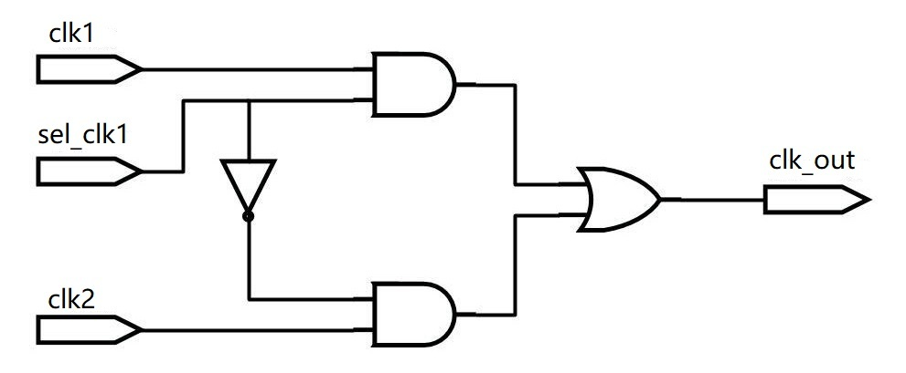
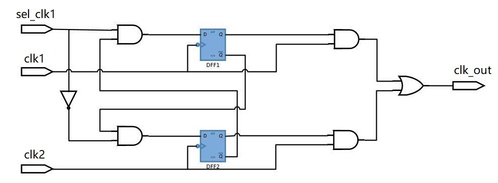
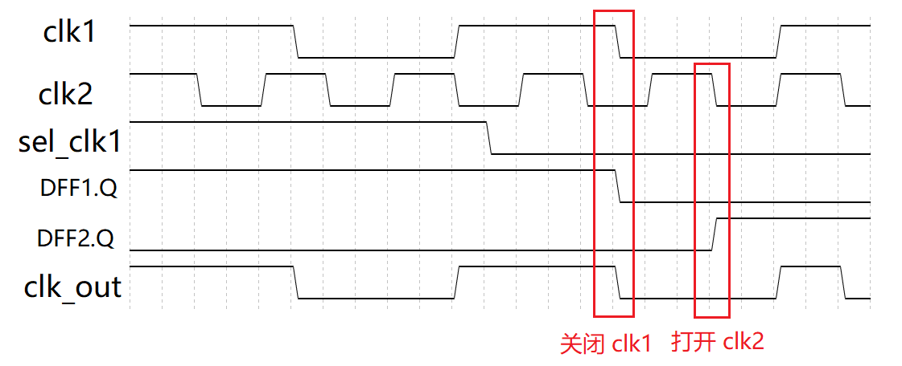
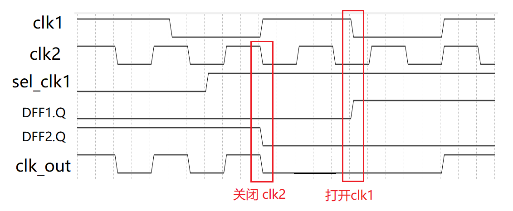

Debido a las limitaciones de varios escenarios de aplicación, el chip a menudo necesita cambiar entre diferentes fuentes de reloj según la aplicación. Por ejemplo, los modos de bajo consumo y alto rendimiento necesitan relojes de baja y alta frecuencia, respectivamente. Las dos fuentes de reloj pueden ser del mismo origen y síncronas, o pueden no estar relacionadas. Usar directamente lógica de selección para cambiar el reloj probablemente cause glitches en la señal de reloj dividido, por lo que la lógica de cambio de reloj también debe manejarse de manera especial.
Problema del cambio de reloj
El diagrama de circuito que usa directamente lógica de selección para cambiar el reloj se muestra a continuación.

Si la señal de selección de reloj `sel_clk1` es asíncrona con respecto a los dos relojes, el momento del cambio de reloj es arbitrario. Si el reloj cambia de `clk1` a `clk2` y el momento del cambio es cuando el nivel de salida de `clk1` es alto, cambiar el reloj inmediatamente causará un glitch en el reloj de salida. El diagrama de formas de onda es el siguiente:
Esquema de cambio de reloj
Cambiar el reloj cuando los dos niveles son opuestos seguramente produce glitches; cuando los niveles son iguales, incluso si no se generan glitches, el período o ciclo de trabajo del primer reloj después del cambio no es ideal. Por lo tanto, para evitar glitches, es necesario cambiar el reloj cuando ambos relojes están en nivel bajo.
Un circuito típico de cambio de reloj se muestra a continuación.
Este circuito utiliza el flanco de bajada del reloj para almacenar en un registro la señal de selección de reloj `sel_clk1`. Al mismo tiempo, una señal de selección de reloj realimenta el control sobre el otro reloj, garantizando que solo un reloj esté activo al mismo tiempo. Finalmente, se usa una "operación OR" para combinar los dos relojes y completar el proceso de cambio de reloj.

El diagrama de formas de onda del cambio de reloj (`clk1` -> `clk2`) usando el circuito anterior se muestra a continuación.
Como se puede ver en la figura, al cambiar de `clk1` a `clk2`, primero se desactiva `clk1` y luego se activa `clk2`. Debido a que la señal de selección de reloj se sincroniza con el flanco de bajada del reloj, no aparecen glitches durante el cambio.

El diagrama de formas de onda para el cambio de `clk2` a `clk1` se muestra a continuación.

Considerando que la señal de selección puede ser asíncrona, es necesario añadir dos etapas de flip-flops antes del flip-flop que registra la señal de selección de reloj para realizar la sincronización y reducir la propagación de la metaestabilidad. El diagrama estructural es el siguiente. Este circuito de cambio de reloj es más general.

Diseño del cambio de reloj
La lógica de cambio de reloj general y segura se describe a continuación.
Ejemplo
input rstn ,
input clk1,
input clk2,
input sel_clk1 , // 1 clk1, 0 clk2
output clk_out
);
reg [2:0] sel_clk1_r ;
reg [1:0] sel_clk1_neg_r ;
reg [2:0] sel_clk2_r ;
reg [1:0] sel_clk2_neg_r ;
// Usar 3 etapas de registro para sincronizar la operación AND entre la señal de control del otro reloj y la señal de control de este reloj
always @(posedge clk1 or negedge rstn) begin
if (!rstn) begin
sel_clk1_r <= 3'b111 ; // Nota sobre los valores por defecto
end
else begin
//sel clk1, and not sel clk2
sel_clk1_r <= {sel_clk1_r[1:0], sel_clk1 & (!sel_clk2_neg_r[1])} ;
end
end
// En el flanco de bajada, usar 2 etapas de registro para la señal de selección de reloj
always @(negedge clk1 or negedge rstn) begin
if (!rstn) begin
sel_clk1_neg_r <= 2'b11 ; // Nota sobre los valores por defecto
end
else begin
sel_clk1_neg_r <= {sel_clk1_neg_r[0], sel_clk1_r[2]} ;
end
end
// Usar 3 etapas de registro para sincronizar la operación AND entre la señal de control del otro reloj y la señal de control de este reloj
always @(posedge clk2 or negedge rstn) begin
if (!rstn) begin
sel_clk2_r <= 3'b0 ; // Nota sobre los valores por defecto
end
else begin
//sel clk2, and not sel clk1
sel_clk2_r <= {sel_clk2_r[1:0], !sel_clk1 & (!sel_clk1_neg_r[1])} ;
end
end
// En el flanco de bajada, usar 2 etapas de registro para la señal de selección de reloj
always @(negedge clk2 or negedge rstn) begin
if (!rstn) begin
sel_clk2_neg_r <= 2'b0 ; // Nota sobre los valores por defecto
end
else begin
sel_clk2_neg_r <= {sel_clk2_neg_r[0], sel_clk2_r[2]} ;
end
end
// Para operaciones lógicas de reloj, normalmente se utiliza una biblioteca de celdas de proceso específica.
// Aquí se usan las celdas de puerta lógica integradas de Verilog en su lugar.
wire clk1_gate, clk2_gate ;
and (clk1_gate, clk1, sel_clk1_neg_r[1]) ;
and (clk2_gate, clk2, sel_clk2_neg_r[1]) ;
or (clk_out, clk1_gate, clk2_gate) ;
endmodule
La descripción del testbench es la siguiente; principalmente genera la señal de selección para los relojes asíncronos.
Ejemplo
module test ;
reg clk_100mhz, clk_200mhz ;
reg rstn ;
reg sel ;
wire clk_out ;
always #(2.5) clk_200mhz = ~clk_200mhz ;
always @(posedge clk_200mhz)
clk_100mhz = #1 ~clk_100mhz ;
initial begin
clk_100mhz = 0 ;
clk_200mhz = 0 ;
rstn = 0 ;
sel = 1 ;
#11 rstn = 1 ;
#36.2 sel = ~sel ;
#119.7 sel = ~sel ;
end
clk_switch u_clk_switch(
.rstn (rstn),
.clk1 (clk_100mhz),
.clk2 (clk_200mhz),
.sel_clk1 (sel),
.clk_out (clk_out));
initial begin
forever begin
#100;
if ($time >= 10000) $finish ;
end
end
endmodule
Los resultados de la simulación se muestran a continuación; se puede ver que no se generan glitches al cambiar entre relojes, pero hay un retardo.